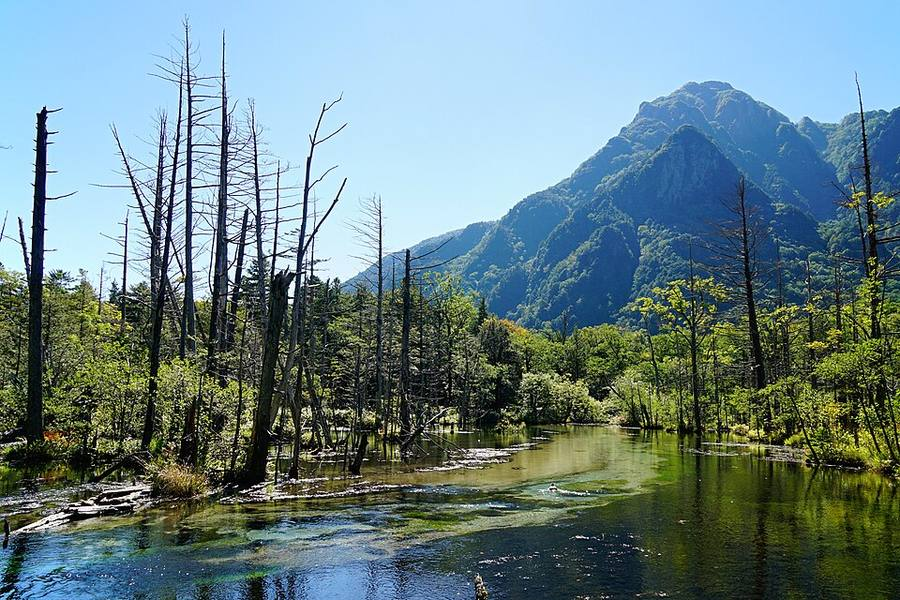
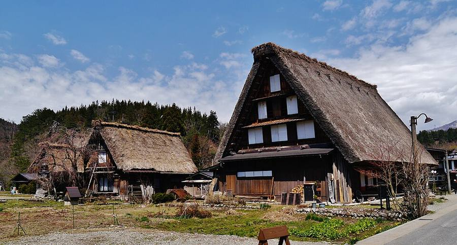
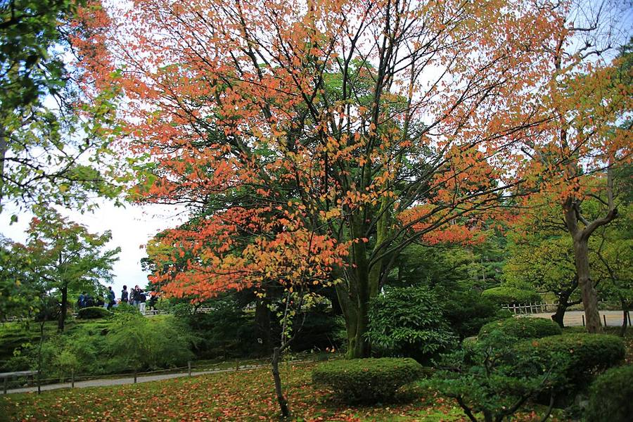
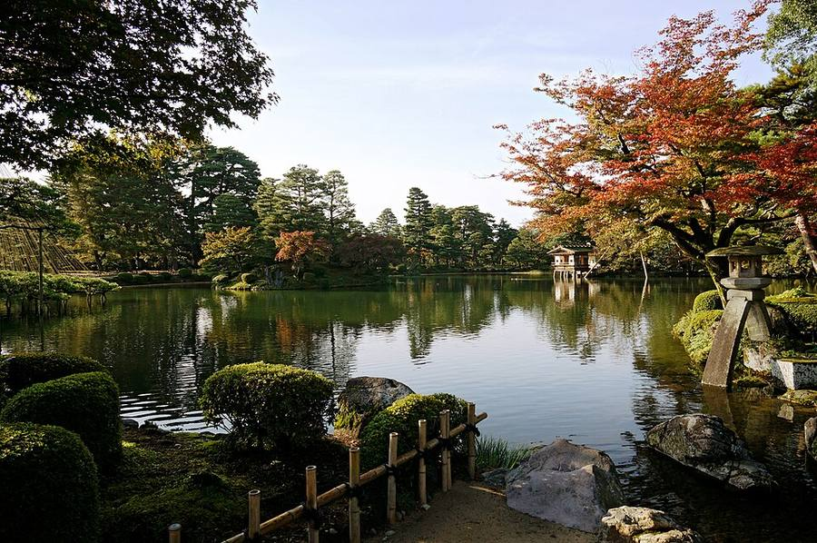
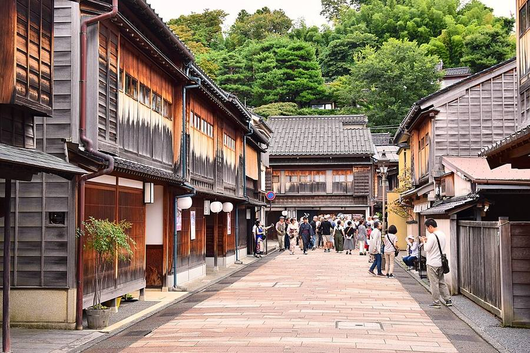

Планирование переездов
Твоя схема и мой вывод
Вывод: схема хорошая и по погоде: Kamikochi и Shirakawa-go попадают на сухие сб и вс, а дождливый понедельник уходит на дорогу. Если Shirakawa-go в воскресенье, в понедельник Kanazawa не нужна - лучше C (сразу в Kyoto, ~3 ч 20) или B (с остановкой в Inuyama или Gero). Во вт-ср в Kanazawa ливень (~39-45 мм в день).
Карта переездов
Суббота 17.10: Matsumoto → Kamikochi → Takayama




Что такое Hirayu Onsen
Маленький посёлок с горячими источниками на высоте 1 283 м, «вход» в район Okuhida. Здесь развилка автобусов: на Kamikochi, Takayama, Shin-Hotaka, Norikura, Matsumoto. В твоей схеме это просто пересадка 30 минут: из шаттла из Kamikochi в автобус до Takayama.
Если будет время на пересадке: в здании автостанции (Alps Kaido Hirayu) на 3 этаже есть онсэн с открытой ванной и видом на Альпы, у остановок бесплатная ванночка для ног. Рядом водопад Hirayu (в списке 100 лучших водопадов Японии), туда ходит бесплатный шаттл. Ночевать там стоит только ради рёкана с онсэном.
Shirakawa-go: сколько там нужно
2 часа - минимум: смотровая площадка над деревней (шаттл 5 мин от автостанции, пешком ~15 мин в гору) и прогулка по деревне. 3-4 часа - если зайти внутрь дома (например, Wada) и пообедать.
Время в деревне - по путеводителям Mapple и ANA (официальной цифры нет). В вс сухо, в пн 8 мм.



Понедельник 19.10: три способа до Kyoto
A · через Shirakawa-go и Kanazawa
В дороге ~4 ч 10, Kyoto в 18:09. Смысл есть, только если Shirakawa-go не было в воскресенье. Минусы: весь день с чемоданом под дождём (Shirakawa-go ~3 мм, Kanazawa ~13 мм).



B · на юг с остановкой (Inuyama или Gero)
Подходит, если хочется провинциальный город по пути. Камеры хранения на станциях Inuyama и Gero проверю, если выберешь B.
C · сразу в Kyoto
Самый простой день. В Kyoto в пн ~2 мм, во вт ~1 мм, в ср дождь ~11 мм, в чт сухо на фестивали.


Дождь по дням, мм (Open-Meteo, 16.10 15:47)
| сб 17 | вс 18 | пн 19 | вт 20 | ср 21 | |
|---|---|---|---|---|---|
| Kamikochi | 0 | 0 | 5 | 16 | 11 |
| Takayama | 0 | 0 | 4 | 14 | 14 |
| Shirakawa-go | 0 | 0 | 3 | 22 | 17 |
| Kanazawa | 0 | 0 | 13 | 39 | 45 |
| Gero Onsen | 0 | 0 | 4 | 29 | 16 |
| Inuyama | 0 | 0 | 3 | 8 | 14 |
| Kyoto | 0 | 0 | 2 | 1 | 11 |
В чт 22.10 почти везде снова сухо. Чем дальше от сегодня, тем прогноз менее точный.
Билеты: что брать заранее
| Переезд | Бронь | Где |
|---|---|---|
| Matsumoto → Kamikochi (поезд + автобус Alpico) | Автобус: с бронью садишься первым. ⏳ Нужна регистрация на сайте 発車オーライネット, рейс 11:30 (запасной 12:10). Поезд - на станции. | бронь на сб |
| Kamikochi → Hirayu → Takayama | Не нужна, платишь при посадке | на месте |
| Takayama ↔ Shirakawa-go ↔ Kanazawa | На часть рейсов только по брони | Nohi (бронь через Japan Bus Online) |
| Поезда JR: Hida, синкансэн, Thunderbird | На станции в автомате или кассе, можно накануне | станция |
Цены переездов здесь не пишу - только время. Скажи, какой вариант берёшь, и я подготовлю брони в твоём Chrome.
← к маршруту